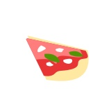

通勤前にエスプレッソを一杯。イタリアの普通の風景ですが、日本にはそんなカフェが少ないみたいです。イタリアの朝の空気が好きで、日本でも朝早くお店を開けることにしました。 “おはよう”と一杯のエスプレッソをどうぞ。

仕事終わりにイタリアンバールで落ち着いた一杯はいかがですか。都会の喧騒から少し離れて、ビールかワイン。イタリアの家庭料理と一緒にさっと飲んで、明日また頑張りましょう。 締めのエスプレッソもご用意できます。
イタリア・ナポリから上質なものだけを少量ずつ直輸入。日本ではここでしか飲めないナポリの味を新鮮なままにお届けします。長年愛用のマシンでプロのエスプレッソを抽出します。
イタリアの家庭料理を日替わりでご提供。 ハーブもパンチェッタも、できるだけ自家製のものを使ってお作りします。時には余った食材で気まぐれメニューを作るかも。肩肘張らずリラックスして楽しんで頂けたらと思います。